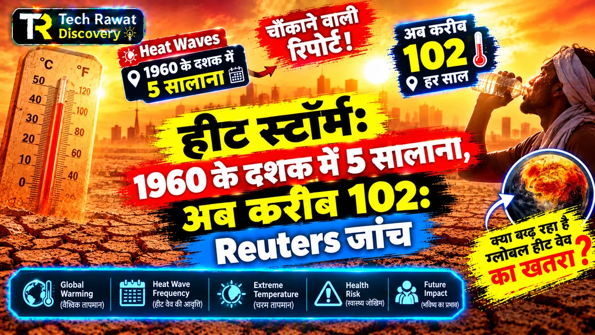
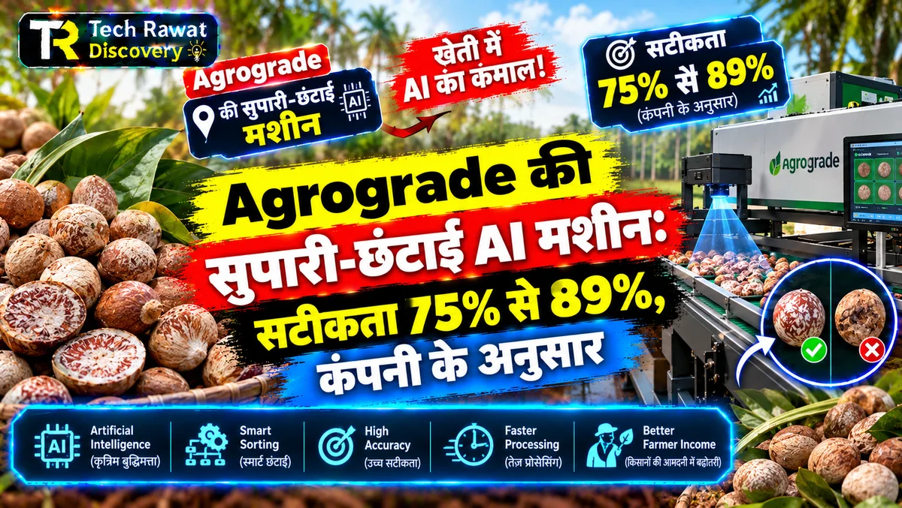

TECH RWT Discovery: Science और Technology आसान हिंदी में
TECH RWT Discovery पर विज्ञान और तकनीक की खबरें और गहरी पड़तालें आसान हिंदी में मिलती हैं। हर लेख के अंत में स्रोत दिए जाते हैं और कठिन शब्द सरल भाषा में समझाए जाते हैं। ताज़ा लेख नीचे देखिए, या सीधे किसी विषय पर जाइए: Science, Space & ISRO, Technology & Future Tech, Environment और Innovation। पूरी सूची के लिए सभी लेख देखिए।

नवीनतम प्रकाशन (Latest Articles)

Strathclyde-Durham का प्रस्ताव: CPL रोशनी से पहचानें 'मिरर लाइफ़'
Strathclyde और Durham के शोधकर्ताओं ने उल्टे अणुओं वाले 'मिरर लाइफ़' को घुमावदार रोशनी (CPL) से पहचानने का पहला प्रस्ताव रखा है। तरीका चरण-दर-चरण, सीमाएं और भारत का पहलू।
पूरा लेख पढ़ें →
NVS-03 से क्या NavIC फिर अकेले लोकेशन बता पाएगा?
NavIC के पास अभी तीन चालू सैटेलाइट हैं, जबकि अकेली लोकेशन के लिए चार चाहिए। ISRO की योजना 30 अक्टूबर की रात NVS-03 छोड़ने की है। जानिए आगे क्या।
पूरा लेख पढ़ें →
इंटरनेट TV ऐप्स पर लाइसेंस की सिफ़ारिश, पर नियम अभी लागू नहीं
TRAI ने FAST जैसे इंटरनेट TV ऐप्स के लिए 20 साल की अनुमति, ₹1 लाख entry fee और स्मार्ट TV पर सिर्फ़ अधिकृत ऐप की सिफ़ारिश की है। नियम अभी अधिसूचित नहीं हुए।
पूरा लेख पढ़ें →
127 में 122 कोरल रीफ़ तंत्र ‘अति संकटग्रस्त’, पर ज़्यादातर अभी ज़िंदा
IUCN के पहले वैश्विक आकलन में 127 में से 122 कोरल रीफ़ तंत्र ‘अति संकटग्रस्त’ हैं। देखे गए बदलाव से यह संख्या 30 है, बाक़ी छलांग भविष्य के अनुमान से आती है। भारत वाला समूह भी शामिल है।
पूरा लेख पढ़ें →
BioStack को $9.5 मिलियन: अस्पताल रिकॉर्ड से बनेगा मेडिकल AI डेटा
BioStack को Peak XV की अगुवाई में $9.5 मिलियन का सीड मिला। अस्पताल रिकॉर्ड जोड़कर मेडिकल AI का डेटा बनाने वाली इस कंपनी का काम, भारत से रिश्ता और DPDP के सवाल।
पूरा लेख पढ़ें →
रोज़ 2,000 mg DHA, दो साल: याददाश्त में फ़ायदा नहीं दिखा
USC के 365 लोगों के दो साल के ट्रायल में रोज़ 2,000 mg DHA दिमाग के तरल तक पहुंचा, पर याददाश्त और hippocampus पर फ़ायदा नहीं दिखा। भारतीय थाली और ICMR-NIN की सलाह से मिलान।
पूरा लेख पढ़ें →
curl की कम गंभीर खामियां 26 अक्टूबर से GitHub पर खुले में
curl ने 26 अक्टूबर से LOW और MEDIUM सुरक्षा खामियों की रिपोर्ट सार्वजनिक GitHub पर लेनी शुरू की। रिपोर्टों की बाढ़ क्यों आई, जोखिम क्या है और भारत पर असर क्या होगा।
पूरा लेख पढ़ें →
क्या ISRO 2029 तक चार launch pad तैयार कर पाएगा?
ISRO चेयरमैन ने 2029 तक चार चालू launch pad की बात कही है। अभी दो चालू हैं, एक मंज़ूर और एक निर्माणाधीन। पढ़िए चारों की स्थिति, तीसरे pad का खर्च, Kulasekarapattinam की वजह और समयसीमा।
पूरा लेख पढ़ें →
Tonbo Imaging 66% प्रीमियम पर लिस्ट, पर IPO का पैसा कंपनी को नहीं
Tonbo Imaging ₹700 के इश्यू प्राइस से करीब 66% ऊपर लिस्ट हुई, पर ₹852 करोड़ का पूरा IPO ऑफर फॉर सेल था। जानिए पैसा किसे मिला और FY26 में कमाई क्यों घटी।
पूरा लेख पढ़ें →
PM2.5 106 µg/m³: भारतीय सूत्र से AQI 252, US सूत्र से 186
एक ही PM2.5 पर भारत का CPCB सूत्र और अमेरिका का EPA सूत्र अलग AQI देते हैं। 106 µg/m³ पर 252 बनाम 186। तालिका में देखिए अंतर कहां से आता है और दिल्ली के लिए क्या मतलब है।
पूरा लेख पढ़ें →
Statin से मांसपेशी-दर्द का कैल्शियम-रिसाव मिला, पर यह लैब का नतीजा है
UBC की स्टडी बताती है कि atorvastatin RyR1 को खुला रख सकती है, पर Lancet की 23 ट्रायल की समीक्षा में मांसपेशी के लक्षण पहले साल में करीब 1% रहे। पांच सवालों में पूरा सच।
पूरा लेख पढ़ें →
Artemis III: 14 दिन की योजना, चांद पर नहीं, धरती की कक्षा में
NASA के अनुसार Artemis III 2027 में 4 astronaut को चांद पर नहीं, धरती की कक्षा में ले जाएगा, जहां Blue Moon और Starship के test lander से docking होगी।
पूरा लेख पढ़ें →
भारतीय ब्रांड का स्मार्टफ़ोन 2028 तक: अश्विनी वैष्णव का लक्ष्य और चुनौतियां
अश्विनी वैष्णव ने 23 अक्टूबर 2028 तक भारतीय डिज़ाइन, निर्माण और ब्रांड वाले फ़ोन का लक्ष्य रखा। जानिए आज के असेंबली मॉडल से यह कितना अलग है और चुनौतियाँ क्या हैं।
पूरा लेख पढ़ें →
चक्रवात कैसे बनता है और 'अर्नब' नाम कब मिलता है?
23 अक्टूबर 2026 को बंगाल की खाड़ी में कम दबाव का क्षेत्र बना। IMD के अनुसार 26 अक्टूबर तक यह चक्रवाती तूफान बन सकता है। जानिए चक्रवात कैसे बनता है, श्रेणियां क्या हैं और नाम कब मिलता है।
पूरा लेख पढ़ें →
SpectraGaze को ₹3.7 करोड़ का सीड फंड, पर ग्राहकों में ISRO पहले से
अहमदाबाद की इमेजिंग सेंसर स्टार्टअप SpectraGaze को GVFL की अगुवाई में ₹3.7 करोड़ का सीड मिला। भारत में डिटेक्टर पहले आयात होते थे; अब क्या बदला और क्या अभी साबित होना बाकी है।
पूरा लेख पढ़ें →
क्या 1841 की ट्रेन-देरी असल में 1848 की थी? 178 साल पुरानी गुत्थी
Exeter की ट्रेन-देरी को अंतरिक्ष-मौसम का सबसे पुराना असर माना जाता था, पर Space Weather की स्टडी इसे 1848 की बताती है, और सबसे पुरानी भी नहीं। तुलना, सबूत और भारत की Colaba वेधशाला।
पूरा लेख पढ़ें →
SR-1 Freedom का लक्ष्य 2028 में Mars, पर परमाणु मॉड्यूल अभी बन रहा है
NASA का SR-1 Freedom रिएक्टर की गर्मी को बिजली और फिर thrust में बदलेगा। जानिए चार चरण, 20 अक्टूबर 2026 की घोषणा, भारत के लिए मतलब और वह सब जो अभी अनिश्चित है।
पूरा लेख पढ़ें →
मुनाफ़े का 15% हिस्सा माँगा: Micron Taiwan में 24 घंटे की हड़ताल
Micron के Taiwan संयंत्र में 24 घंटे की चेतावनी हड़ताल हुई। FY26 में कंपनी का राजस्व $133.19 अरब रहा। जानिए माँग क्या है, सप्लाई पर असर कितना और भारत के लिए मतलब क्या।
पूरा लेख पढ़ें →
GM की अगुवाई में Peak Energy को $108 मिलियन: सोडियम-आयन पर दांव
GM ने सोडियम-आयन बैटरी स्टार्टअप Peak Energy के $108 मिलियन के दौर की अगुवाई की। जानिए यह सौदा क्या है, लिथियम से कहां कमज़ोर है और भारत के स्टोरेज बाज़ार के लिए क्या मतलब रखता है।
पूरा लेख पढ़ें →
UNEP: भारत 2030 लक्ष्य पर ‘ऑन ट्रैक’, पर क्या उत्सर्जन घटेगा?
UNEP की Emissions Gap Report 2026 कहती है कि 1.5°C का मौक़ा गया और मौजूदा नीतियां 2.8°C की ओर ले जाती हैं। भारत ‘ऑन ट्रैक’ है, पर उत्सर्जन तीव्रता का मतलब समझिए।
पूरा लेख पढ़ें →
Altermagnetism: चुंबकत्व के तीसरे रूप को मिला Europhysics Prize 2026
Altermagnetism को Europhysics Prize 2026 मिला। जानिए चुंबकत्व के दो पुराने परिवार, 2019 से 2024 की कड़ियां, तीसरे रूप की पहचान और IIT भुवनेश्वर जैसे भारतीय काम की स्थिति।
पूरा लेख पढ़ें →
eMudhra की 8 कमज़ोर चाबियां: क्या भारत की DSC पर असर पड़ा?
eMudhra के 8 intermediate certificates की चाबियां कमज़ोर निकलीं। MeitY और CERT-In के अनुसार भारत की DSC और eSign सेवाएं अप्रभावित हैं, पर सर्वर चलाने वालों को अपडेट करना होगा।
पूरा लेख पढ़ें →
Perseverance ने 45.22 km चलकर Opportunity को पछाड़ा, पर असली खोज बाकी
Perseverance रोवर ने 11 अक्टूबर 2026 को 45.22 km पर Opportunity का रिकॉर्ड तोड़ा। जानिए AutoNav, पुराने रोवरों से तुलना, Pragyan से फ़र्क और आगे की खोज।
पूरा लेख पढ़ें →
हीट स्टॉर्म: 1960 के दशक में 5 सालाना, अब करीब 102: Reuters जांच
Reuters की जांच के अनुसार 1960 के दशक में सालाना करीब 5 हीट स्टॉर्म सक्रिय थे, इस दशक में करीब 102। सबसे बड़ा हीट स्टॉर्म Vera 367 दिन चला और धरती के ~85% हिस्से तक पहुंचा।
पूरा लेख पढ़ें →
Agrograde की सुपारी-छंटाई AI मशीन: सटीकता 75% से 89%, कंपनी के अनुसार
Agrograde की AI सुपारी छंटाई मशीन मंगलुरु में लगी है। ‘भारत की पहली’, 89% सटीकता और मज़दूरों की जगह, इन चार दावों में क्या पक्का है, क्या कंपनी का कहना भर।
पूरा लेख पढ़ें →
10,000 में 1 tungsten से फ़्यूज़न का इग्निशन-दबाव दोगुना हो सकता है
PPPL के सैद्धांतिक मॉडल के अनुसार दीवार से आया 0.01% tungsten फ़्यूज़न इग्निशन का दबाव करीब दोगुना कर सकता है। जानिए क्या हुआ, क्यों, और ITER-IPR वाले भारत के लिए मतलब।
पूरा लेख पढ़ें →
Skyroot को Reflect Orbital से 2 launch मिले: Vikram-1 और Vikram-1U
अमेरिकी कंपनी Reflect Orbital ने 14 अक्टूबर 2026 को Skyroot से दो launch खरीदने की बात बताई। सौदे में क्या पक्का है, आईने वाले Eärendil-1 से रिश्ता क्या है, और भारत के लिए दांव क्या हैं।
पूरा लेख पढ़ें →
Apple India का ₹1 लाख करोड़ राजस्व: मुनाफ़ा आख़िर कितना बचा?
Apple India का FY26 राजस्व ₹1,03,853 करोड़ रहा और शुद्ध मुनाफ़ा ₹5,311 करोड़। जानिए इन आँकड़ों के चार आम भ्रम, निर्यात से फ़र्क़ और भारत के लिए इसका मतलब।
पूरा लेख पढ़ें →
Gwalior टेलीकॉम जोन में 5,500 करोड़ के प्रस्ताव, पर निवेश अभी बाकी
Gwalior के टेलीकॉम मैन्युफैक्चरिंग जोन के लिए 24 कंपनियों ने 5,500 करोड़ रुपए के प्रस्ताव दिए हैं, पर लक्ष्य 10,000 करोड़ से ऊपर है। दिल्ली-मुंबई बैठकों की तुलना और शिलान्यास की तारीख।
पूरा लेख पढ़ें →
AQI 227 कैसे बनता है? 8 प्रदूषकों में सिर्फ़ 1 तय करता है अंक
दिल्ली में 21 अक्टूबर की सुबह AQI 227 रहा। CPCB का यह अंक आठ प्रदूषकों के अलग-अलग अंकों में से सबसे ऊंचा चुनकर बनता है। पूरा हिसाब एक काल्पनिक उदाहरण सहित समझिए।
पूरा लेख पढ़ें →
3,000 कदम पर Alzheimer's में tau धीमा दिखा, पर कारण साबित नहीं
रोज़ 3,000 कदम और Alzheimer's की खबर 'नई स्टडी' बनकर फिर फैली, पर पेपर नवंबर 2025 का है और नतीजा जुड़ाव का है। तीन भ्रम, तथ्य और भारत के बुज़ुर्गों के लिए मतलब।
पूरा लेख पढ़ें →
BepiColombo: 8 साल की यात्रा, 21 नवंबर को Mercury की कक्षा की योजना
BepiColombo को Mercury पहुंचने में 8 साल लगे। जानिए MESSENGER से तुलना, 21 नवंबर की कक्षा-प्रवेश योजना, MPO-Mio की कक्षाएं और Mangalyaan से सीधा मुक़ाबला।
पूरा लेख पढ़ें →
MumbaiSemi का DhruvaPro चिप: एक RF चिप से NavIC, GPS, Galileo, BeiDou
IIT बॉम्बे की स्पिनआउट MumbaiSemi का DhruvaPro चिप NavIC, GPS, Galileo और BeiDou के संकेत एक RF चिप से पकड़ने के लिए बना है। छह कदमों में समझिए कैसे काम करता है और अभी क्या अनिश्चित है।
पूरा लेख पढ़ें →
Jio Platforms के ₹30,213 करोड़ के IPO में असल में बिक क्या रहा है?
Jio Platforms का ₹30,213 करोड़ का IPO 21-23 अक्टूबर 2026 को खुला है, पर कंपनी का सिर्फ़ करीब 2.9% हिस्सा बिक रहा है। Hyundai के रिकॉर्ड से तुलना, पैसे का हिसाब और जोखिम पढ़िए।
पूरा लेख पढ़ें →
उत्तर-पूर्वी मानसून आया: El Niño गीला, पर IMD का अनुमान सामान्य
IMD ने 15 अक्टूबर 2026 को उत्तर-पूर्वी मानसून की शुरुआत घोषित की। मज़बूत El Niño के बीच अनुमान 'सामान्य' का है, पर पहले 14 दिन 72% सूखे रहे। तमिलनाडु और दक्षिण भारत के लिए मतलब।
पूरा लेख पढ़ें →
क्या ब्लीच हुआ कोरल 7 हफ़्ते में लौट सकता है? Stanford की लैब स्टडी
Stanford की लैब स्टडी में ब्लीच हुए कोरल स्वस्थ क्लोन को छूकर सात हफ़्ते में उबर गए। जानिए प्रक्रिया चरण-दर-चरण, इसकी सीमाएं और लक्षद्वीप व मन्नार की खाड़ी के लिए मतलब।
पूरा लेख पढ़ें →
वनों की कटाई घटी, पर 46 करोड़ हेक्टेयर वन क्षरित: FAO रिपोर्ट
FAO की SOFO 2026 रिपोर्ट के अनुसार वनों की कटाई 1990 के दशक से घटी, पर शुद्ध वन-नुकसान 2015-2025 में बढ़ा और 460 मिलियन हेक्टेयर वन क्षरित हैं। भारत बहाली में दूसरे स्थान पर है।
पूरा लेख पढ़ें →GII 2026: भारत 38वें स्थान पर, 2015 के 81वें स्थान से कैसे पहुंचा?
WIPO के GII 2026 में भारत 139 देशों में 38वें स्थान पर है। 2015 के 81वें स्थान से सफर, नतीजों में 25वीं और संसाधनों में 49वीं रैंक, और पेटेंट आंकड़ों का भारतीय पक्ष समझिए।
पूरा लेख पढ़ें →
Meta ने Muse Spark Open खोला: 816 अरब पैरामीटर, चलाने को 1TB मेमोरी
Meta ने 15 अक्टूबर 2026 को 816 अरब पैरामीटर वाले Muse Spark Open के वज़न खोले। इसे चलाने को करीब 1TB मेमोरी चाहिए, यानी दो Apple M5 Ultra Mac Studio। भारत के लिए क्या मायने, पढ़िए।
पूरा लेख पढ़ें →
क्या Japan का MMX मंगल के चांद Phobos से मिट्टी ला पाएगा?
JAXA का MMX मिशन भारतीय समय 20 अक्टूबर की रात 1:11 बजे उड़ेगा। लक्ष्य है मंगल के चांद Phobos से कम से कम 10 ग्राम सैंपल लाकर 2031 में ऑस्ट्रेलिया में उतारना।
पूरा लेख पढ़ें →